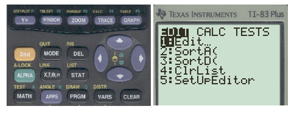
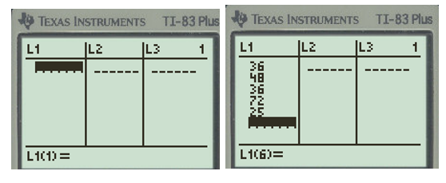
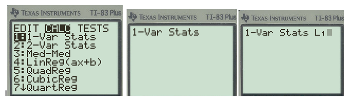
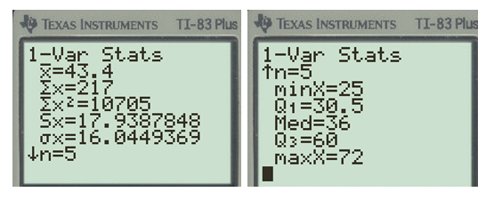
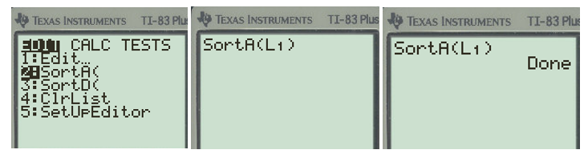
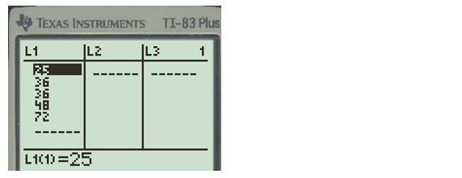
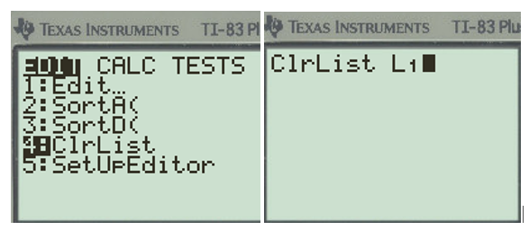

Section 3.1 Measures of Center
This section focuses on measures of central tendency to describe the center of the data. We are looking at what is considered a typical value. We will use the mean, median, mode, and midrange to describe the center.
Objectives
At the end of this section you will be able to
Determine if data has a mode or is multimodal
Calculate the mean, median, and midrange for data
Use technology to find the mean, median, and midrange
Subsection 3.1.1 Understanding the Basics
Many times, you are asked what to expect “on average” or what is a typical value. These types of questions can be answered by knowing the center of the data set. There are three measures of the center that we will focus on: the mean, median, and mode.
The mode is the data value that occurs the most frequently in the data. To find it, you count how often each data value occurs and then determine which data value occurs most often. This is easily seen with a dot plot or a list of values.
Example: A sample of five students are taking the number of credits this semester: 12, 15, 15,16,18. The mode is 15 credits since it occurs more often than the other values.
Example 3.1.1.
A sample of six students are taking the number of credits this semester: 12, 15, 15,16,18, 18. What is the mode?
Solution.
This example is bimodal since there are two modes: 15 credits and 18 credits since they occur more often than the other values.
The median is the value in the middle of a sorted list of data. To find it, you put the data in order from smallest to largest and then determine which data value is in the middle of the data set. If there is an odd number of values, it will land on an actual data value. When there is an even number of values you will need to average the middle two values.
Example: A sample of five students are taking the number of credits this semester: 18, 12, 15,16, 14.
Solution: First put the value in order: 12, 14, 15,16, 18. There are 5 values so the middle value when in order is 15.
Example: A sample of six students are taking the number of credits this semester: 18, 16, 15,19, 12, 14.
Solution: First put the values in order: 12, 14, 15,16, 18, 19. There are 6 values so the middle value is between the middle two values of 15 and 16, thus the median is \((15+16)/2 = 15.5 \) credits.
The mean is the arithmetic average of the numbers. You will add all the values together and then divide by the number of values.
The formula for the sample mean is
\begin{equation*}
\bar{x}=\frac{\sum x}{n}
\end{equation*}
where x-bar represents the mean, the sigma symbol indicates to find the sum of the data values, where each x is a data value, and then divide by the sample size of n.
Example: A sample of five students are taking the number of credits this semester: 12, 14, 15,16, 18.
Solution: The sum is 75 divided by the 5 values so the mean is 15 credits per person.
\(\bar{x}=\frac{75}{5}=15 \)
The formula for the population mean is
\begin{equation*}
\mu=\frac{\sum X}{N}
\end{equation*}
where \(\mu \) represents the mean, the sigma symbol indicates to find the sum of the data values, where each X is a data value in the population, and then divide by the size N of the population.
Another measure of the center is the midrange which is the average of the smallest and largest value of the data set. The midrange is the middle of the range of values in the data.
Example: A sample of five students are taking the number of credits this semester: 12, 14, 15,16, 18. The average of the smallest and largest is (12+18)/2 = 15 credits.
Example 3.1.2.
A sample of five students have the following number of apps on their cellular phones: 36, 48, 36, 72, 25. Find the measures of center.
Solution.
The mode is 36 since it occurs most often.
Since there are five values, the middle value is 25, 36, 36 , 48, 72 when arranged in order, thus the median is 36.
The mean is the sum of the values divided by 5, thus \(\bar{x} =217/5 = 43.4 \) apps per student. This is higher than the median because it is skewed to the right by the large value of 72.
The midrange\(= (25+72)/2 = 48.5 \) which is also shifted to the right.
Subsection 3.1.2 Using TI-83 Calculator for Summary Statistics
Next, we will use technology to find the measures of center. These directions are for the TI-83 Plus which should be the same for the TI-84. We will use the same scenario as our last check point. Example: A sample of five students have the following number of apps on their cellular phones: 36, 48, 36, 72, 25. Find the measures of center.
First, enter the raw data into one of the lists: Start with the STAT button and under the EDIT menu choose option 1:Edit and then hit the enter button.

Type in the values and hit [enter] after each entry.

Select the [STAT] button and use an arrow to the right once to highlight CALC across the top. Then select option 1 for 1-Var Stats which refers to 1-variable statistics and then hit [enter]. Next you need to identify where the data is located, so select L1 by hitting the [2nd] button then the number 1 which has L1 above it and then [enter] button.

Note: If you are using a TI-84 the List is L1 and the FreqList is left blank, scroll to Calculate and hit [enter]. You should see the following outputs for either calculator.

Calculator Summary: Reading the values going down, \(\bar x \) is the mean of 43.4, the sum of the values is 217, if we squared each value and found the sum that is the value 10705. Sx = 17.9388 is the sample standard deviation and σx = 16.045 is the population standard deviation (which we will not use in this course). The sample size is n = 5, the arrow pointing down indicates there are more values to follow so click on the arrow down button until all the other values show. MinX = 25 is the smallest value, Q1 = 30.5 is the first quartile, Med = 36 is the median, Q3 = 60 is the third quartile, and maxX = 72 is the maximum value in the data. We will talk about these values later in this chapter.
Note: the mode is not given in the summary statistics. But we can find it by sorting the data from smallest to largest and check the frequencies.
Click on the [STAT] button and under EDIT select option 2: Sort A( and hit the [enter] button.
Next you need to identify where the data is located, so select L1 by hitting the [2nd] button then the number 1 which has L1 above it and the ) button and then [enter]. It should say Done.

Now go back to [STAT] button and select option 1:Edit and [enter] to look at the data. It is now sorted in ascending order. Now we can see the mode is 36 since it occurs twice.

Subsection 3.1.3 Application Problems
Now that we understand the basics, let’s analyze the typical number of siblings from a sample of 20 UNC students from Survey 1 using technology. The data set is below.
You can clear out the list or enter the values in L2. To clear the list, click on the [STAT] button and under EDIT select option 4:ClrList and hit [enter] then identify the list to clear as L1 and hit [enter].

Subsection 3.1.4 Using StatKey to Find Summary Statistics
Now that we understand the basics, let’s analyze a larger data set with technology.